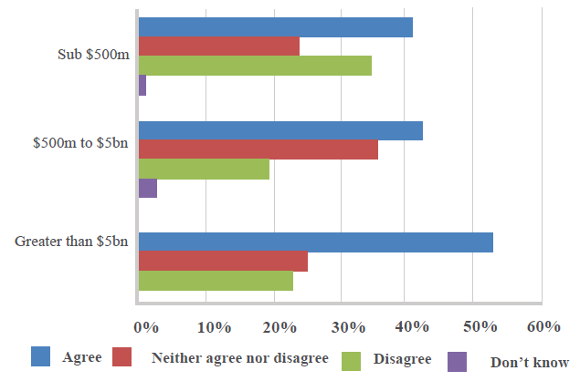

返回主页
Company politics & decision-making

To what extent do you agree with the statement: “Company politics trump evidence in decision-making”?
Retter is Better, WE Create and Deliver Real Value!
An organisation’s ability to make decisions effectively
underpins everything from operations to strategy.
And yet, decision-making in business management is
poorly understood and rarely discussed explicitly.
This report, written by The Economist Intelligence
Unit and sponsored by Applied Predictive
Technologies (APT), examines how businesses really
make decisions, and how they can improve their
decision-making capabilities. It finds that businesses
should address both the information decision-makers
have available to them, and the organisational context
in which decisions are made.
version:1.0; jobnet@188.com © retter2012.com